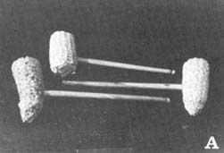
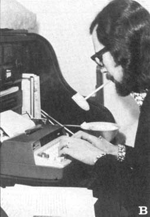
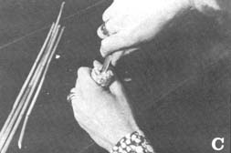
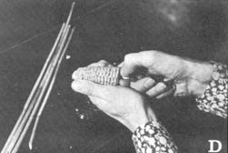
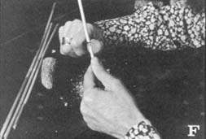
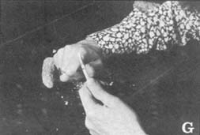
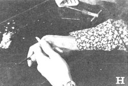
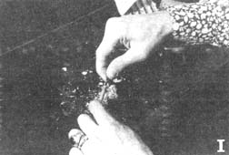
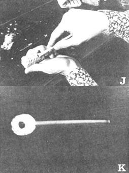

How About A Corncob Pipe
If you haven't kicked the habit of smoking yet, you could try doing it in a way that's cheaper than cigarettes: Try making a corncob pipe.
By John D. Meek
January/February 1973
True, nobody ought to smoke . . . but if you haven't kicked the habit yet, you could try doing it in a way that's safer than cigarettes. Cheaper, too. In fact, the equipment's free for the making, so...
Everybody knows the "farmer's meerschaum". At least, we've all seen factory-made corncob pipes in the stores - for 50 cents or a buck each - complete with plastic stem and, sometimes, a metal filter that filters nothing, but does heat up the smoke so that it burns your tongue.
It's pretty certain, however, that the kind of old-timer who made the corncob pipe famous didn't go to the store when he needed a new one. In the first place, there was probably nowhere to shop within a day's ride of his place . . . and besides, the thrifty farmer thought, why buy what you can make? If a return to that kind of self-sufficiency makes sense to you - as it does to many folks these days - you may want to try your hand at a homemade smoking tool.
To begin, you have to get hold of a good corncob. I'm serious! Just any old cob won't do. For one thing, the best pipe material is a recently grown ear that's still firm and not soft with age. Moreover, I'm told that the new hybrid corns are no dern good for pipe making because they're bred to produce as much kernel and as little cob as possible. In other words, the pith - the soft core of the ear - is too small to hollow out properly. Corn of the old Yellow Dent variety is probably best, if you can find it.
(A) Corncob pipes vary in size and shape, so tailor yours to fit your hand comfortably. (B) You'll note that mine is of the "extra-large" variety. (C) Use the larger blade of your penknife to dig out the pith to a depth of two inches. (D) Employ your finger and knife blade as a guage. (E) Make a hole for the stem with a twist drill. (F) Cut your wild rice stalk above the joint mouthpiece and trim to desired length. (G-H) Prepare the end that presses into the bowl with a diagonal cut. (I) Clean out the stem joint. (J) press-fit the bowl with a U-shaped cut upward, and (K) you got yer own dandy corncob pipe!
At any rate, select some likely looking cobs and pick them over to find one that has [1] an end that will fit your hand comfortably and [2] plenty of pith. Needless to say, you'll have to break a few ears to find out what their structure is like.
When you've found your cob, snap off one end to a good length for a pipe bowl . . . about two and a half inches suits me, and I like the pointed end because it seems to fit my hand better. You can trim the break nice and even all the way 'round if you want to, though doing so won't make your pipe smoke any better.
After trimming (or not trimming) the top of the bowl, take the larger blade of your penknife and dig the pith out of the cob with a twisting motion . . . down to a depth of about two inches (estimate by using your knife and finger as a gauge). You'll notice that the next layer out from the core is hard and woody. That firm ring is what gives your pipe its durability, so don't pare it away too much. Your finished hole will be one-half to three-quarters of an inch across, depending on the size of the cob.
It's said - truly, in my experience - that the thicker the walls of the pipe are, the cooler it'll smoke, so don't shave the outside of the bowl. The result won't be as slick looking as the store-bought product, but I like the cushiony feel of the untrimmed ear in my hand, anyhow.
I make my pipestems from the woody stalks of wild rice, though I'm told that the old-timers used the slenderest part of the cornstalk - cut near the top of the plant - or elder twigs. Whatever material you choose, make the stem about six inches long (shorter, if anything) and about a quarter of an inch in diameter . . . again, less rather than more.
The traditional cornstalk or elder pipestem has a pith that must be hollowed out at some point, either with a hot wire - the old farmers' way - or with a small twist drill. You'll be saner to do this now, before you bore the bowl to receive the twig. It's heartbreaking to split that stick while you're working on it and not be able to find another to fit your carefully prepared chunk of corncob. (After you've pierced the stem, by the way, be sure to blow through it before you suck on it.)
If you use wild rice stalk for your pipestem, cut the mouthpiece just above one of the joints so you'll be able to hold this strong point in your teeth without worrying about splitting the tube. (Yes, the mouthpiece is round . . . and yes, it's comfortable to bite onto.) The other end of the stem - the bowl end - should also be cut just above a joint in the reed. Since the rice plant is already hollow except at the joints, the hard bit at the mouthpiece is the only place you'll have to clear out.
When your pipestem is cut and pierced, prepare the bowl end by taking a flattish slice - about a third of an inch long - off one side to form a U-shaped opening (see the photo). When you put your pipe together, this cut will be on the upper side of the stem.
Next, bore a hole in the side of the bowl just above the bottom of the dug-out portion. If you like to do things the hard way, you can use the small blade of your knife for this job . . . though it'll take you a while to dig through the corncob wall like that, and you're quite likely to end up with a hole in the wrong place when the knife snaps shut on your finger.
To avoid all that trouble, I make the opening in the bowl with a twist drill of slightly smaller diameter than the finished pipestem. I hold the drill with a tap wrench - keeping the bit as near to a right angle with the bowl as possible - and bore with a full twist clockwise followed by a half-twist counterclockwise to clear the hole and prevent it from getting too big for the tube.
When you've drilled through into the hollow of the bowl, press-fit the stem (with the U-shaped cut upward). There's your pipe!
The first smoke with your masterpiece isn't necessarily going to be a joy, because the pith you didn't scrape out of the bowl must burn away and the woody part of the cob has to season a bit. No new pipe will stay lit, either, and the homemade variety isn't any exception to this rule. Two or three smokes should be about enough to break in the "farmer's meerschaum", though . . . and if your handiwork didn't turn out well, remember. that the making cost you nothing but a few minutes. Save the old stem if you can, and start over.
AN ADDITIONAL WORD ABOUT CORNCOB PIPES
Mark Twain had a message for agriculturalists. He advises, "If you grow wheat just to get the chaff, you're crazy . . . but if you grow corn to get the cob you're smart."
The sweet smoke of the cob pipe has addicted many people. First Lady Rachel Jackson puffed away, claiming her doctor promised relief from bronchial affliction. Mayor Fiorello LaGuardia and General MacArthur were also confirmed corncobbers.
The world corncob pipe center is Washington, Missouri. These Missouri farmers produce special extra-woody, durable corncobs, the size of a man's wrist and perfect for pipes. Each cob makes two pipe bowls and a miniature. Even if the cobs from your fertilized corn are not that large, save them and dry them. Then produce your own pipes.
First, cut a dried corncob to the desired bowl length, approximately 13/4 inches. Smooth off the outside. Bore out the soft inside until your thumb fits in it. Taper the bottom base and make a wooden plug to fit the taper. Then cut a hole about one-half inch in diameter through the wall of the cob near the base, tapering the hole inward.
Cut a reed, or other hollow stem, of slightly larger diameter than the bowl hole. Cut the reed as long as one segment, keeping the knot at one end. With a drill rod or hard wire, knock the soft pith from the center of the stem. Taper the end of the branch to fit the pipe hole. Then twist the knobless end of the stem into place.
Smoke the pipe slowly to preserve the flavor of the smoke. To preserve your pipe, hold it in your hand rather than clamping the stem between your teeth.
From A Peace Corp Volunteer Publication
|
 |
 |
 |
|
 |
 |
 |
|
 |
 |
 |
|
 |
|
|